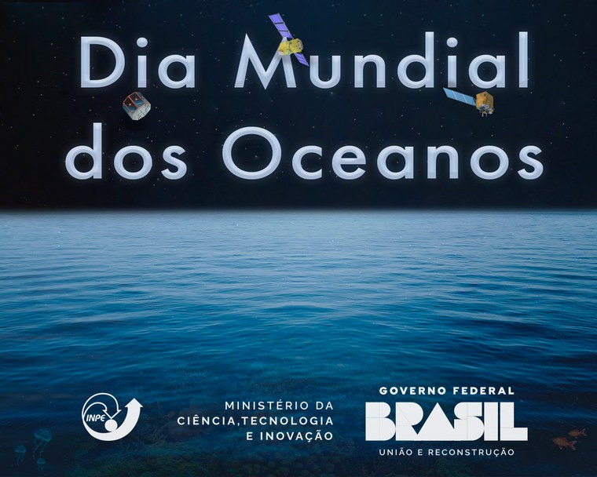
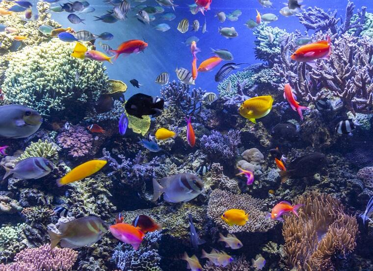

Dia mundial dos oceanos
Esta é a página inicial dedicada a dar irformacoes sobre o dia mundial dos oceanos, que ocorrerá dia 8 de junho.
Origem do Dia dos Oceanos
O Dia Mundial dos Oceanos , celebrado no dia 8 de junho de cada ano, foi oficialmente estabelecido pela Organização das Nações Unidas (ONU) em 2008, porém sua proposta ocorreu em 1992 durante a Conferência das Nações Unidas sobre Meio Ambiente e Desenvolvimento, realizada no Rio de Janeiro. Celebrar esta data é uma oportunidade para refletirmos sobre a importância do oceano, como melhor entendê-lo e como interagir com ele de uma forma sustentável.
